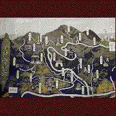

鳥居観音/埼玉県名栗村 
埼玉県の西方浄土、名栗村は自然豊かな静かな村だ。しかしその山里のイメージを軽く吹っ飛ばしてくれるのが、ここ鳥居観音だ。
この鳥居観音という寺、白雲山という山全体が寺域となっておりその中に大建造物が点在しているのだが、それらは皆とり憑かれたようにゴージャス＆エキセントリックなのだ。特に山頂の巨大観音は遠くからも見えるので自然を求めてやって来るアウトドア派の方々をちょっとヤな気持ちにさせてくれる。
さて、その巨大観音目指して鳥居ツアーを始めましょうか。
まずは麓の本堂に御参拝、の前に平沼弥太郎氏の像に御挨拶をお忘れなく。彼こそがこの寺を開き、現在の鳥居観音の全容をひとりで造り上げた張本人なのだから。
ここでこの寺と平沼氏についてすこしレクチャー。鳥居観音開創者、平沼弥太郎氏は昭和15年にこの寺を開いたのだがその開山のきっかけは「観音を奉れ」との母の遺言、親孝行者である。観音像を彫り、その観音堂（恩重堂という）を建ててから、彼の鳥居人生が大ブレイクする。ちなみに白雲山は元々平沼家所有のもの。金持ちでもある。齢五十を目前にした驚異のセカンドライフがこうして始まった。
その後、次々に仏像を彫り続け、彫った仏像100余体。ついでに造った建造物は主なものでも10以上。しかもオヤジ独りで創っちゃった系独特のチープな感じはまるで無い。とても素人が作ったとは思えないほど良く出来ている。新興宗教の大教団並みの本格派具合なのである。彼は旧埼玉銀行頭取。真面目な人でもあったのだろう。
で、本堂にあがる。内陣にずらり並ぶのは平沼氏作の七観音＋二天＋四天王、スーパースター勢揃いである。奥の壁には鮮やかなレリーフ、天井には天女、鳳凰、花の格子絵などが。圧巻の
一言。しかし外から差し込む光は怪しげだ。ガラス窓にミロ風の得体の知れない絵が直描きしてあるからだ。この辺は少しマッド入ってます。
本堂の右横には氏の収集した品々が並ぶ鳥居文庫が。中国インド日本の仏像仏画からトーテムポール、はたまた鹿の剥製まで、氏の趣味の広さと財産の大きさを実感できる。
そしていよいよ巨大観音を目指し山道に入る。と、言いたいところだが、山頂まで一気に行ける自動車道（有料）があるので、そっちを利用した。だから仁王門や恩重堂は見てません、すまん。
車で山を登って行くと、中国風の玉華門、五角形の鐘楼、南方中国日本の3種の建築様式をミックスしたという三蔵法師の遺骨が奉られている三蔵塔などがみられる。とにかく古今東西の仏教様式のごった煮状態。遠くには観音様が地球儀の上に立っている、ユニバースな観音像（高さ15�E）などもあり珍寺気分を盛り上げてくれる。
で、インド風の納経塔を過ぎると、いよいよ巨大観音の姿が近づいてくる。
この大観音、救世大観音といい3体の観音様が並んでいる法隆寺スタイルなのだが、基段部四隅に四天王を配した高さ33�Eというビッグなスケール。臆せず中に入ってみよう。
そこには何とも形容しがたい空間が広がっている。強いて言えばヨーロッパの教会、またはイスタンブールあたりのモスクの内部といったところだろうか。天使のようなモノが乗っかってる太い柱が林立し、ドーム状の天井からはステンドグラス越しの光が差し込む。しかし正面に奉られてるのは阿弥陀様、堂内は吉祥天や薬師如来のオンパレード（勿論平沼氏製）。そして何より壁面全部を覆い尽くす1体2万円の観音様（参拝者の奉納、これは勿論平沼氏製ではなく大量生産品）、万体観音。空間的には西洋風なのだが、モチーフは勿論仏教もの。このハイブリッド具合がたまらない。
中央の華やかな螺旋階段を登っていく。ステンドグラスには観音様の顔が。
そしてさらに登ると大観音の後頭部あたりに出る。そこは金網だけが張ってある展望台。目の前に広がる奥武蔵の山々が美しい。ここからなら怪しげな大観音を視界に入れないで済むからね。
1997.9.
珍寺大道場 HOME